SpringBoot对于SpringMVC的自动化配置都在WebMVCAutoConfiguration类中。
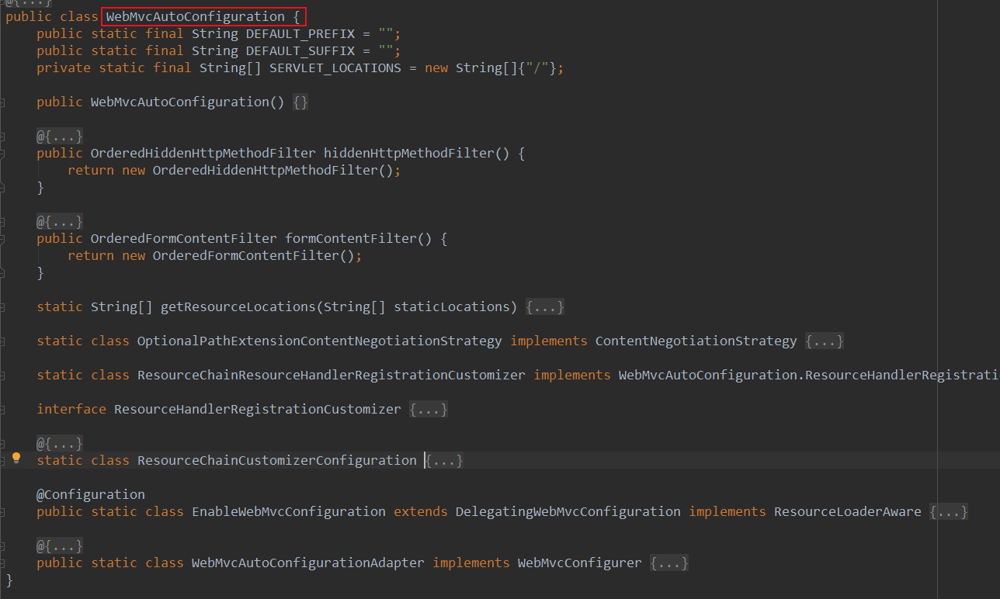
其中一个静态内部类WebMvcAutoConfigurationAdapter实现了WebMvcConfigurer接口。(361)
WebMvcConfigurer接口中定义了addResourceHandlers处理静态资源的默认映射关系.（500）
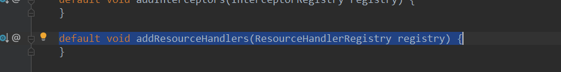
addResourceHandlers在WebMvcAutoConfigurationAdapter类中实现
public void addResourceHandlers(ResourceHandlerRegistry registry) {
if (!this.resourceProperties.isAddMappings()) {
logger.debug("Default resource handling disabled");
} else {
Duration cachePeriod = this.resourceProperties.getCache().getPeriod();
CacheControl cacheControl = this.resourceProperties.getCache().getCachecontrol().toHttpCacheControl();
if (!registry.hasMappingForPattern("/webjars/**")) {
this.customizeResourceHandlerRegistration(registry.addResourceHandler(new String[]{"/webjars/**"}).addResourceLocations(new String[]{"classpath:/META-INF/resources/webjars/"}).setCachePeriod(this.getSeconds(cachePeriod)).setCacheControl(cacheControl));
}
String staticPathPattern = this.mvcProperties.getStaticPathPattern();
if (!registry.hasMappingForPattern(staticPathPattern)) {
this.customizeResourceHandlerRegistration(registry.addResourceHandler(new String[]{staticPathPattern}).addResourceLocations(WebMvcAutoConfiguration.getResourceLocations(this.resourceProperties.getStaticLocations())).setCachePeriod(this.getSeconds(cachePeriod)).setCacheControl(cacheControl));
}
}
}其中
this.resourceProperties.getStaticLocations()返回静态资源的默认映射关系，
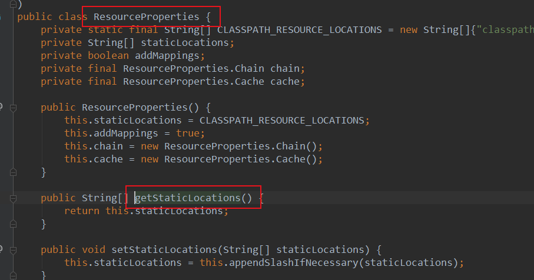
getStaticLocations()方法在ResourceProperties中定义
其中，
private static final String[] CLASSPATH_RESOURCE_LOCATIONS = new String[]{"classpath:/META-INF/resources/", "classpath:/resources/", "classpath:/static/", "classpath:/public/"};classpath:/META-INF/resources/
classpath:/resources/
classpath:/static/
classpath:/public/
第五个默认的资源映射：在静态方法getResourceLocations中定义
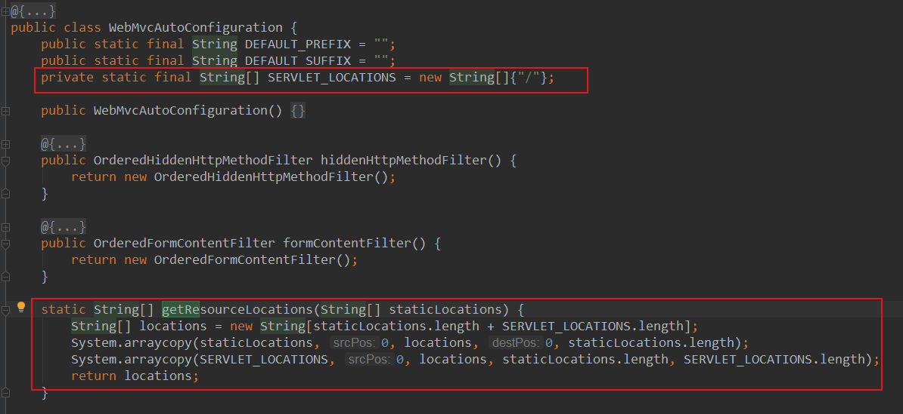
/
小结：
默认情况下，可以在以下五个位置放置静态资源
classpath:/META-INF/resources/
classpath:/resources/
classpath:/static/
classpath:/public/
/
【静态资源一般放在classpath:/static/目录下】
favicon.ico是浏览器左上角的图标，可以放在静态资源路径下或者类路径下，静态资源路径优先级高。
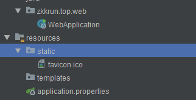
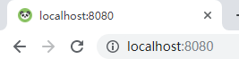
SpringBoot启动后默认在静态资源目录下寻找index.html,如果没有找到；就会去resource/templates目录下寻找index.html(使用Thymeleaf模板)
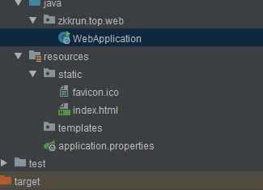
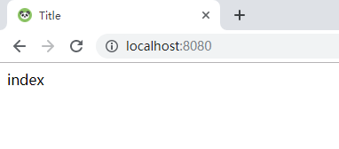
http://www.network-science.de/ascii/
创建banner.txt文件置于resource目录下
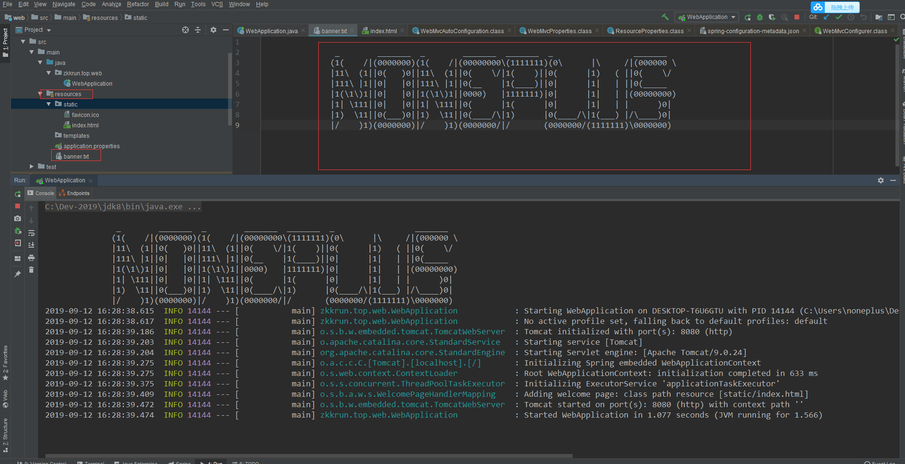
<!-- https://mvnrepository.com/artifact/org.springframework.boot/spring-boot-devtools -->
<dependency>
<groupId>org.springframework.boot</groupId>
<artifactId>spring-boot-devtools</artifactId>
<optional>true</optional>
</dependency>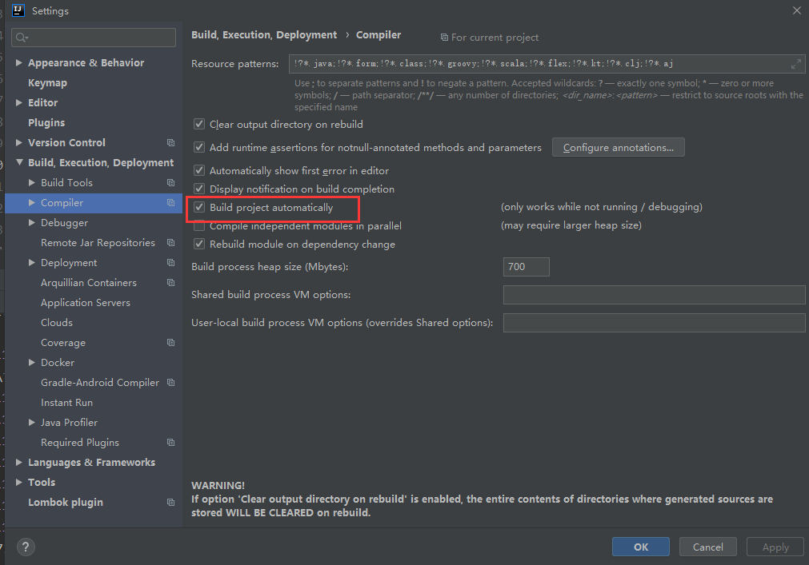
CTRL + ALT + Shift + /
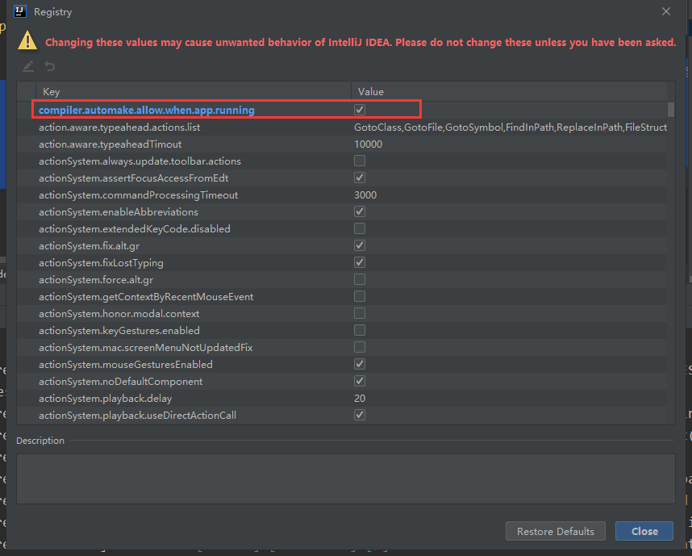